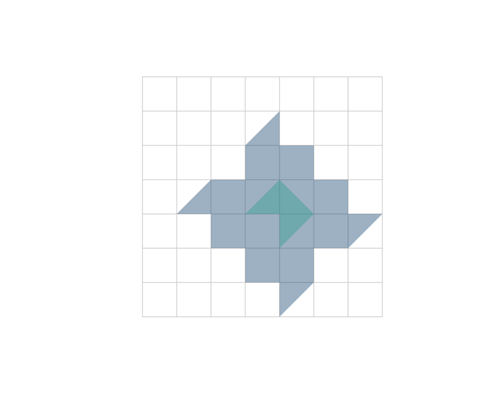

This article uses the offline synthetic grid so it runs anywhere.
With a real network from ox_graph_from_place() the workflow
is identical.
g <- example_osm_graph(n = 8, spacing = 100)Shortest paths
Snap coordinates to graph nodes, then route between them. Routing runs in the Rust core (Dijkstra).
from <- ox_nearest_nodes(g, x = 0, y = 0)
to <- ox_nearest_nodes(g, x = 700, y = 700)
ox_shortest_path(g, from, to)
#> [1] 1 9 17 25 26 27 35 43 44 52 60 61 62 63 64Route alternatives
ox_k_shortest_paths() returns the k loopless
shortest paths (Yen’s algorithm) as a tidy tibble with a list-column of
node ids:
ox_k_shortest_paths(g, from, to, k = 3)
#> # A tibble: 3 × 3
#> rank cost path
#> <int> <dbl> <list>
#> 1 1 1400 <int [15]>
#> 2 2 1400 <int [15]>
#> 3 3 1400 <int [15]>Travel time instead of distance
Attach speeds by road class and derive per-edge travel times, then
route by time by passing weight = "travel_time".
g <- ox_add_edge_travel_times(g)
head(g$edges[c("highway", "length", "speed_kph", "travel_time")])
#> Simple feature collection with 6 features and 4 fields
#> Geometry type: LINESTRING
#> Dimension: XY
#> Bounding box: xmin: 0 ymin: 0 xmax: 300 ymax: 100
#> Projected CRS: WGS 84 / Pseudo-Mercator
#> highway length speed_kph travel_time geometry
#> 1 residential 100 30 12 LINESTRING (0 0, 100 0)
#> 2 residential 100 30 12 LINESTRING (0 0, 0 100)
#> 3 residential 100 30 12 LINESTRING (100 0, 200 0)
#> 4 residential 100 30 12 LINESTRING (100 0, 100 100)
#> 5 residential 100 30 12 LINESTRING (200 0, 300 0)
#> 6 residential 100 30 12 LINESTRING (200 0, 200 100)
ox_shortest_path(g, from, to, weight = "travel_time")
#> [1] 1 9 17 25 26 27 35 43 44 52 60 61 62 63 64Distance matrices
Many-to-many shortest-path costs in one call:
hubs <- ox_nearest_nodes(g, x = c(0, 700, 0), y = c(0, 0, 700))
ox_distance_matrix(g, from = hubs, to = hubs)
#> 1 57 8
#> 1 0 700 700
#> 57 700 0 1400
#> 8 700 1400 0Isochrones (service areas)
An isochrone is the area reachable from one or more origins within a
cost budget. ox_isochrone() finds the reachable nodes (Rust
Dijkstra) and hulls them; with travel_time as the weight,
cutoffs are in seconds.
center <- ox_nearest_nodes(g, x = 350, y = 350)
iso <- ox_isochrone(g, center, cutoffs = c(150, 350), weight = "length")
iso[c("cutoff", "n_nodes")]
#> Simple feature collection with 2 features and 2 fields
#> Geometry type: POLYGON
#> Dimension: XY
#> Bounding box: xmin: 100 ymin: 0 xmax: 700 ymax: 600
#> Projected CRS: WGS 84 / Pseudo-Mercator
#> cutoff n_nodes geometry
#> 1 350 25 POLYGON ((200 300, 100 300,...
#> 2 150 5 POLYGON ((400 300, 300 300,...
plot(g, col = "grey80")
plot(sf::st_geometry(iso), add = TRUE,
col = grDevices::adjustcolor(c("#0d3b66", "#2a9d8f"), 0.4), border = NA)
This is the core of accessibility analysis: with origins at schools
or hospitals and travel_time cutoffs, the polygons describe
who can reach a service within, say, 10 or 20 minutes — the basis for
“Fluxo Verde” and territorial-planning studies.